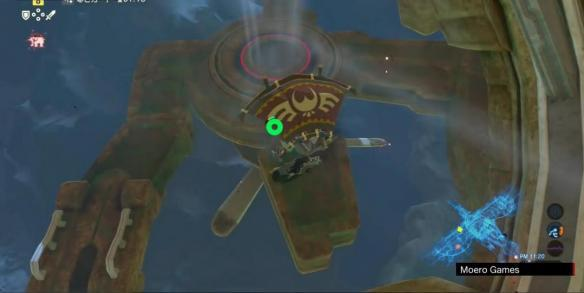
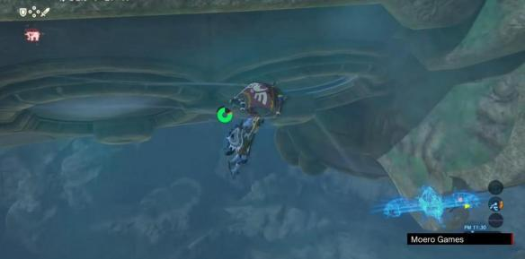
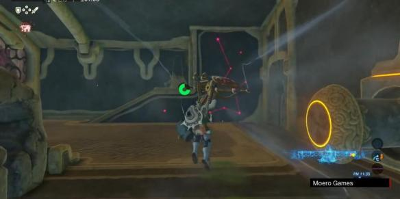
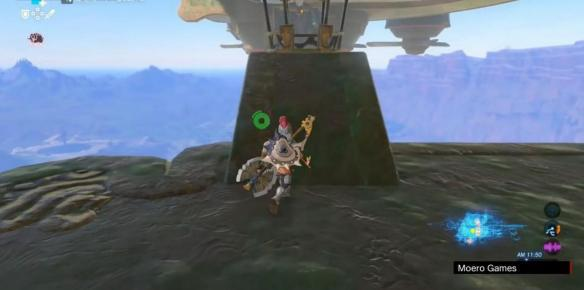
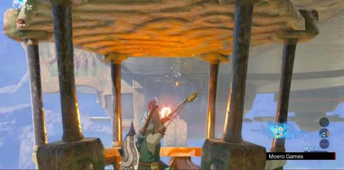

方法B
左翼两个房间的窗不是打开着么?跳出去，借着外面风扇鼓起的上升气流，直接一路飘到玻璃对面的房间里。



省去一些解谜操作。
控制机构4
位置依然在左翼。
控制神兽左倾。
刚才不是跳过窗了么?再从左翼外侧的这个窗跳出去，下一个控制机构在左翼尖端的下部，看清位置用滑翔伞飘过去即可。

要回去，让神兽右倾，用滑翔伞飘回去即可。
控制机构5
来到神兽体外，在右翼的下层，可以看到一个活动亭子。

对面右翼尖端有黑色魔物，射它。

之后神兽右倾，让亭子划到右翼尖端去，那里有最后一个控制机构。